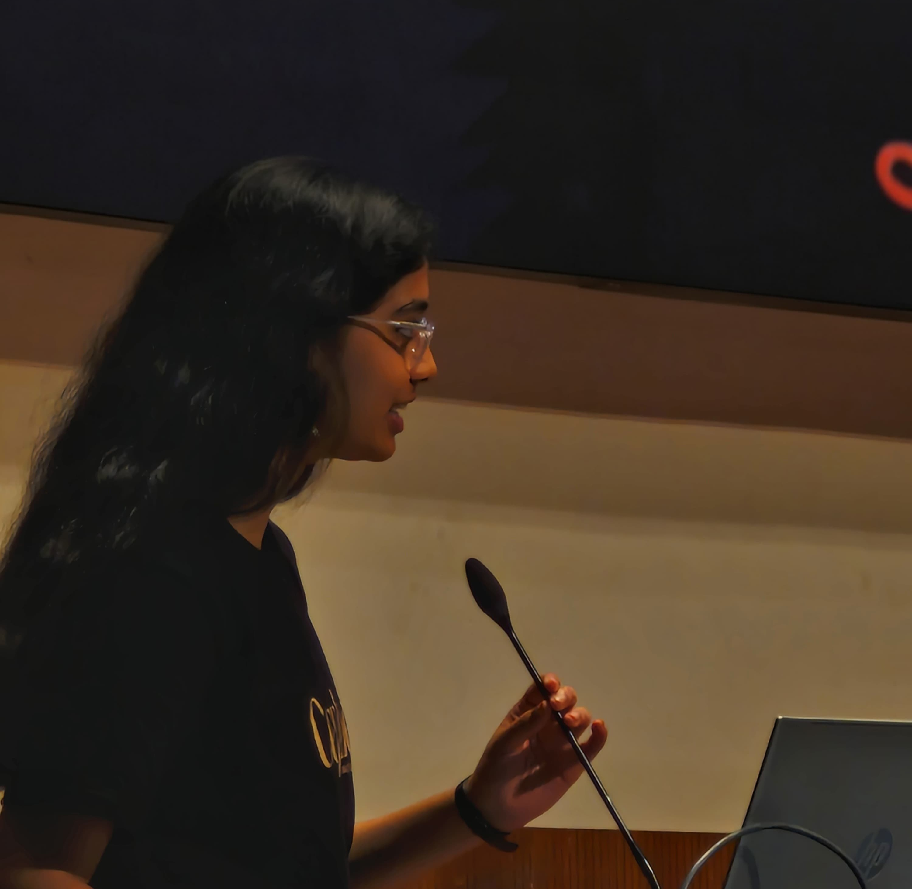

Engineering Physics Undergraduate • IIT Hyderabad
Exploring cosmology, gravitational-wave astronomy, neutrino astrophysics, and galaxy formation through observational data analysis and computational modelling.

I am an undergraduate student in Engineering Physics at the Indian Institute of Technology Hyderabad with research interests in cosmology, gravitational-wave astronomy, neutrino astrophysics, galaxy formation, and large-scale structure. My current work spans IceCube neutrino analyses, dark matter halo modelling, and gravitational-wave population studies using LISA and ground-based detectors.
Searching for neutrino emission from galaxy clusters using IceCube point-source analyses and likelihood methods.
Learn More →Parameter estimation and population inference for compact binaries using LISA and ground-based detectors.
Learn More →Studying halo properties, stellar–halo mass relations, and large-scale structure using cosmological simulations.
Learn More →Investigating the Baryonic Faber-Jackson Relation using the IllustrisTNG cosmological simulations to analyse MOND vs LambdaCDM.
Learn More →